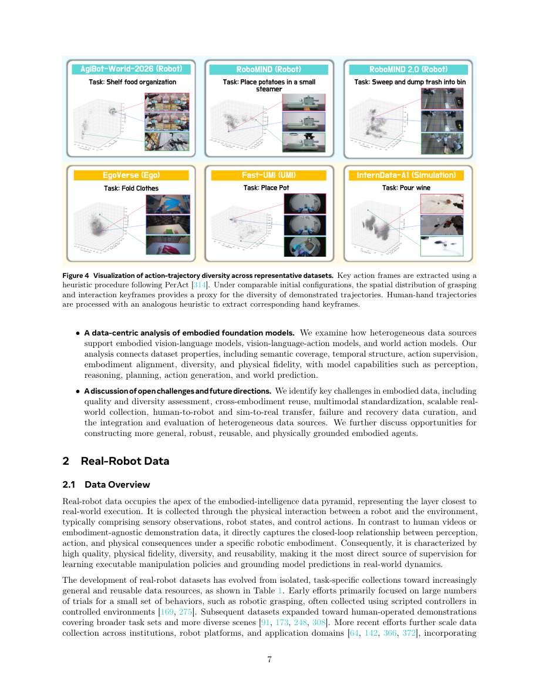

#1
★ 7/10
Data Pyramid for Embodied Manipulation
具身操作的数据金字塔

图 Figure · Page 7 of paper
🎯 用"数据金字塔"框架系统梳理机器人学习的五类数据来源与配方
A structured "data pyramid" framework organizing five data sources to guide embodied robot learning.
🗣️ 一句话比喻 · Plain-English Analogy就像一本厨师的食材指南——不是随手抓冰箱里的东西，这篇论文告诉机器人AI研究者每种"食材"（数据来源）的新鲜度和稀缺程度，以及如何搭配出最好的"食谱"，最终做出一个真正能干活的机器人大脑。Think of it like a chef's guide to ingredients: instead of just grabbing whatever's in the fridge, this paper tells robot AI researchers exactly which "ingredients" (data sources) to use, how fresh or rare each one is, and the best recipes for combining them to cook up a capable robot brain.
| 维度 | 中文 | English |
|---|---|---|
| ❓ 待解决 的问题 |
训练能在真实世界中操作物体的机器人AI，比训练聊天机器人难得多——因为机器人需要"看到什么、做了什么"配对在一起的数据，而这类数据极其稀缺且昂贵。不像语言或图像模型可以从互联网上抓取海量内容，机器人AI没有这条捷径。研究者们缺乏一张清晰的"数据地图"，不知道该去哪里找数据、怎么组合不同来源、每种来源有哪些利弊。 | Training AI robots to physically interact with the world is much harder than training chatbots or image recognizers, because robots need data that links what they see with what they do — and that kind of data is extremely scarce and expensive. Unlike language or vision models that can feast on billions of web pages and images, robot AI has no such shortcut. Researchers lack a clear map of where to get good robot data, how to combine different data sources, and what trade-offs each source brings. |
| 💡 解决 的亮点 |
• 提出"数据金字塔"——将五类机器人数据来源统一分类，并按可扩展性与物理真实性的权衡关系排列。• 系统分析了当前主流具身AI模型（VLA模型、大脑模型、世界-动作模型）如何选择和混合数据。• 明确指出六大开放挑战，为领域提供了清晰的研究路线图。 | • Introduces a "data pyramid" — a unified taxonomy of five complementary robot data sources, ranked by scalability vs. physical realism trade-offs. • Systematically analyzes how leading embodied AI models (VLA models, brain models, world-action models) choose and mix their data. • Identifies six concrete open challenges for the field, serving as a practical research roadmap. |
| 🧪 实验 内容 |
这是一篇综述/分析类论文，没有独立的实验设置。作者通过系统文献回顾，分析了来自真实机器人、UMI设备、第一/第三人称视频、仿真环境和通用视觉语言数据集等五类来源的数据特性，并对比了Open X-Embodiment、RT系列、π0、UniSim等数十个具身AI模型的数据配方与能力表现。 | This is a survey and analysis paper, not an empirical study with its own experiments. The authors conduct a systematic literature review, examining datasets and models across five data source categories. They analyze prominent embodied AI models — including Open X-Embodiment, RT-2, π0, UniSim, and many others — comparing their data compositions, training strategies, and resulting capabilities across tasks like manipulation, navigation, and dexterous control. |
| 📊 实验 结果 |
作为综述论文，作者本身没有产出新的基准数字，但整理了领域内关键数据：真实机器人数据集（如Open X-Embodiment）涵盖22+种机器人、50万+条轨迹；仿真环境可近乎零成本生成数百万条标注样本；第一人称视角数据集Ego4D包含3600+小时视频；据被综述的工作报告，引入视觉-语言预训练数据可使机器人任务成功率提升20–40%。 | As a survey paper, there are no new benchmark numbers produced by the authors. However, they document findings such as: real-robot datasets (e.g., Open X-Embodiment) span 22+ robot types and 500K+ trajectories; simulation environments can generate millions of labeled episodes at near-zero cost; egocentric datasets like Ego4D contain 3,600+ hours of video; and mixing vision-language pretraining data can boost robot task success rates by 20–40% in downstream evaluations reported across reviewed works. |
| 🏁 结论 | 本文提供了具身机器人学习领域首个系统性的"数据金字塔"框架，清晰描绘了各类数据来源的全貌，揭示了数据组合如何影响模型能力，并提出了六大开放挑战，为下一代机器人系统的研发指明了方向。 | This paper provides the field's first comprehensive "data pyramid" framework that maps the entire landscape of embodied robot learning data, revealing how data composition shapes model capabilities and laying out a clear roadmap of six open challenges for building next-generation robots. |
| 🔗 论文 链接 |
arXiv: 2607.24744v1 · 📥 PDF | |
⚙️ Method · 方法详解
作者并没有训练新的机器人或模型，而是做了一件像"编写机器人数据百科全书"的事情。他们把所有与机器人相关的数据来源整理成一个五层金字塔：最底层是稀缺但最真实的真实机器人数据；往上依次是UMI式（可穿戴设备）数据、第一/第三人称视角视频数据、仿真数据，最顶层是数量最多但与机器人关联最弱的视觉-语言数据。每种数据来源在数据质量、多样性、可复用性和物理逼真度四个维度上都有评分。然后，他们系统回顾了数十个近期具身AI模型，梳理每个模型用了哪些数据、这些数据组合如何影响模型的感知、规划和动作生成能力。
The authors don't build a new robot or train a new model — instead, they do something like writing a field guide or encyclopedia for robot data. They organize all known robot-relevant data sources into a five-level pyramid: at the bottom is rare but highly realistic real-robot data; moving up are UMI-style (wearable device) data, egocentric/exocentric video data, simulation data, and at the top, abundant but less robot-specific vision-language data. Each source is rated on four dimensions: data quality, diversity, reusability, and physical fidelity. They then systematically review dozens of recent embodied AI models, mapping out exactly which data sources each model uses and how that affects the model's abilities — like perception, planning, or physical action generation.
🌟 Why It Matters · 为什么重要
要造出能做饭、打扫卫生或辅助医疗的机器人，首先得解决数据问题——本文为研究者和企业提供了共同的语言和蓝图。通过清晰梳理机器人数据的来源与用途，这项工作有望加速家用和工业机器人走向现实。
Building robots that can cook, clean, or assist in hospitals requires cracking the data problem first — and this paper gives researchers and companies a shared vocabulary and blueprint for doing so. By clearly mapping where robot data comes from and what each source is good for, this work could accelerate progress toward capable household and industrial robots.